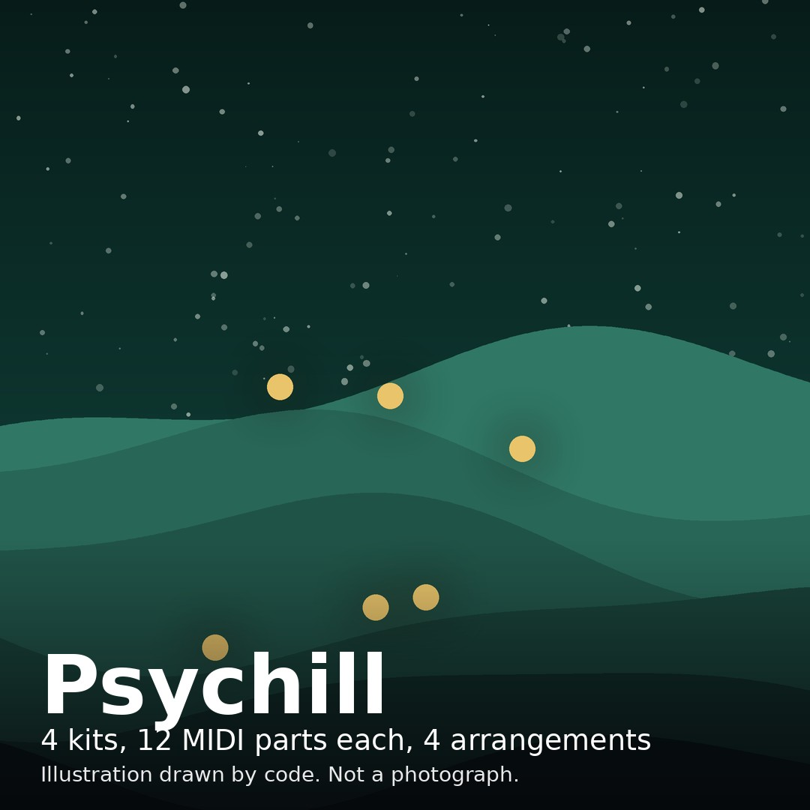
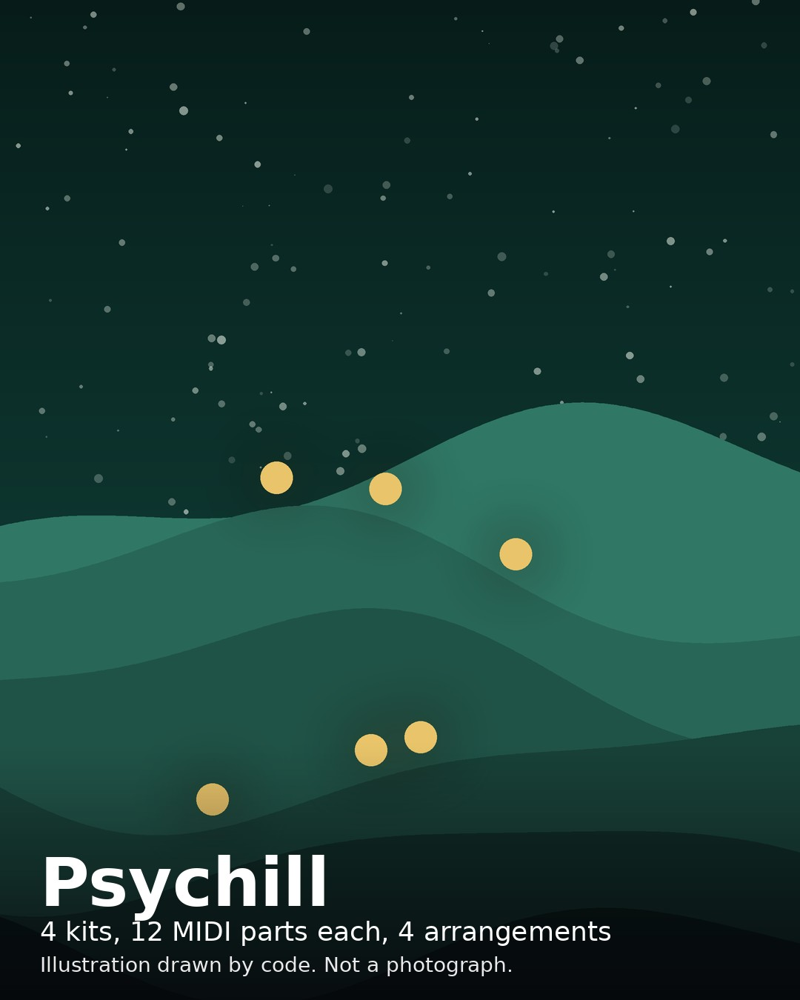
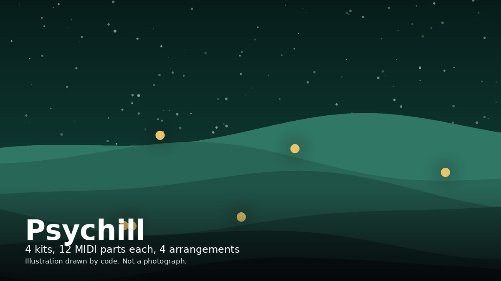

Preview film
The film shows preview, not master. Its sound is the same preview as the MP3.
Images



Draft X post
Psychill kits: Moss Lantern 98, Slow Spores 92, Amber Drift 104, Night Garden 96. Preview is Moss Lantern bars 17-32 at 98 BPM, 39.210 seconds. preview, not a master. The film shows preview, not master. No human listening audition was performed for this build.